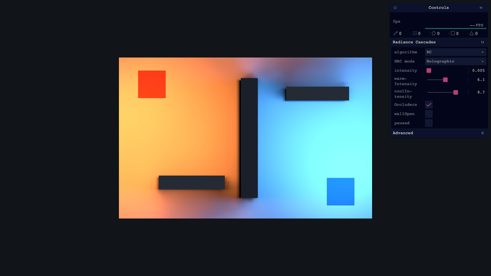
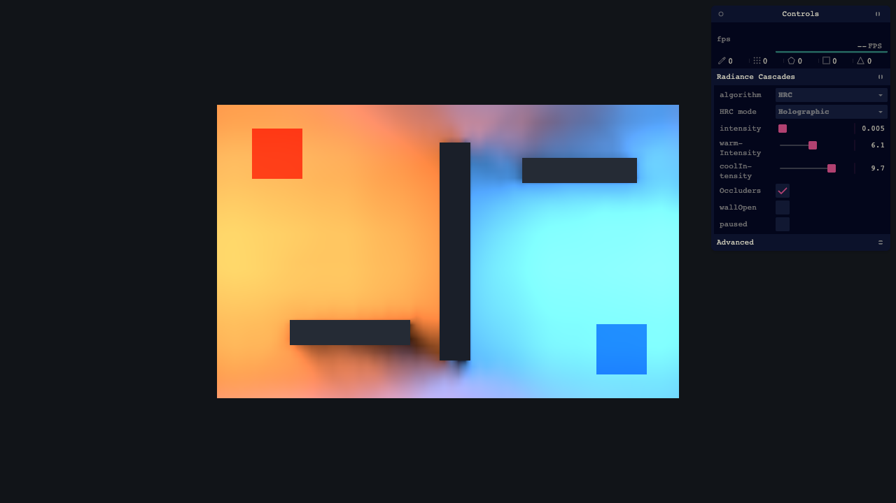
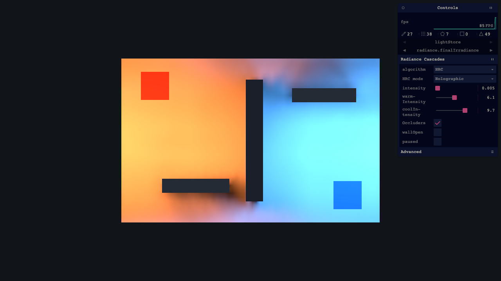
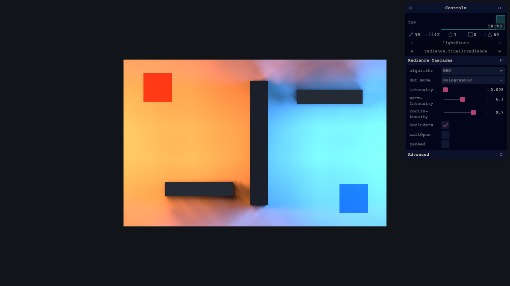
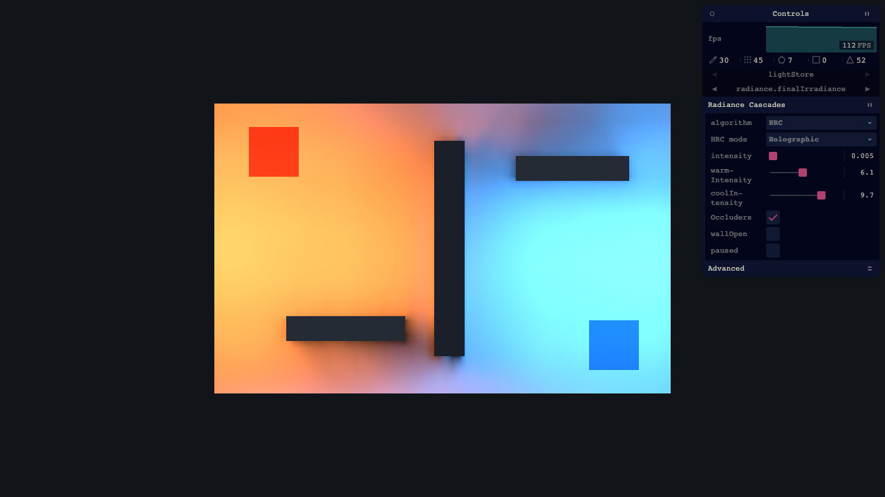
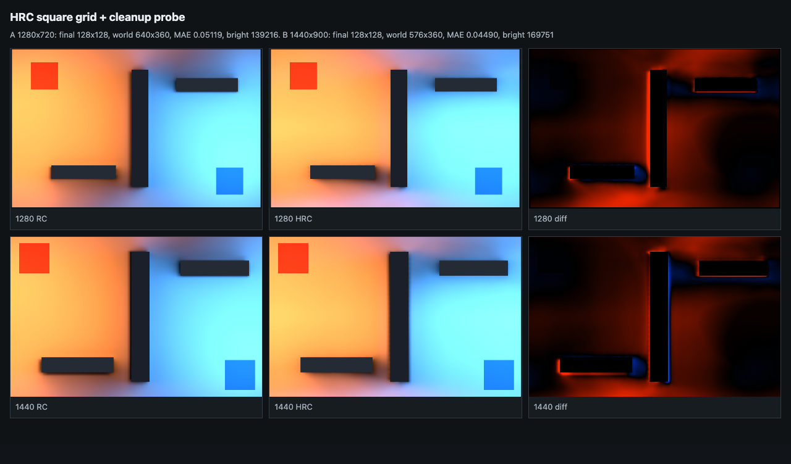

Append-only review report for paper-aligned Holographic Radiance Cascades changes.
Each accepted feature should include one RC reference, up to three HRC candidates,
a selected candidate, the commit hash, vitexec settings, quality notes, and perf.
Branchpr-72-radiance-cascades
Current GateRC visual parity first
Review CadenceStop about hourly or on regression
Candidate CountUp to 3 screenshots per feature
Baseline Comparison
Current RC vs Holographic Baseline
Commit 5fb0a0ec introduced the review log and stored these captures.
This entry records the current visual gap, not an accepted HRC quality change.
baseline

RC reference: clean continuous penumbrae.

Current Holographic: faster, but shadow banding/repetition is visible.
Settingscomparison baseline, cap 512, intensity 0.005, warm 6.1, cool 9.7
PerfHRC estimated sample count 4,980,736
VerdictNot RC parity. Continue paper-coordinate audit before optimization.
Canvas Perceptualscene crop 668x425; luma MAE 0.6506; RMSE 0.6899; SSIM 0.000004; edge MAE 0.0951; profile excess peaks +6
Final RadianceRC 128x128 vs HRC 128x72; luma MAE 29.3040; RMSE 36.0992; SSIM 0.9135; edge MAE 30.6153; high-frequency MAE 1.4183
Metric Sourcewindow.__radianceCascadeControls.comparePerceptual(), vitexec --gpu, June 23 2026
Rejected Probes
Readout Offset / Paper Resolution / Mirror-Origin Probes
These captures are kept as negative evidence. They were reverted and should not
be treated as accepted improvements.
rejected

Rejected: readout offset without full coordinate realignment.

Rejected: full paper-resolution output, still structurally wrong.Rejected: offset plus mirror-origin probe, no visual fix.
CommitNone. Probes were not accepted and were reverted.
VerdictFailures point to a coordinate-system mismatch upstream, not tuning.
Accepted Fixes
Holographic Final Decode: Remove Mandatory Neighbor Cleanup
This entry addresses the reported HRC contact-shadow ring: shadow touching
the blocker, then a bright gap, then continued shadow. The root cause was
an always-on four-neighbor cleanup inside the Holographic final readout,
before optional filtering. The accepted change decodes R0
directly and leaves smoothing to the explicit filter stage.
superseded
Before: visible bright contact ring near occluder silhouettes.

Accepted: direct final decode removes the detached contact ring.
ChangeRemoved mandatory final-readout spatial cleanup; no transfer-coordinate changes retained.
Canvas Perceptualluma MAE 0.03449; RMSE 0.05590; SSIM 0.97589; edge MAE 0.02349; profile excess peaks -2
Final Radianceluma MAE 28.0138; RMSE 34.5007; SSIM 0.91827; edge MAE 26.7811; high-frequency MAE 1.1684
Validationtypecheck, focused vitest lighting tests, vitexec --gpu screenshot and metrics
VerdictSuperseded. Later viewport probes showed the rectangular HRC grid, not this cleanup kernel, was the root cause of viewport-dependent ringing.
Holographic Output Grid: Square Final Fluence
HRC previously scaled its final output grid by viewport world aspect,
producing 128x72 at 16:9 and 128x80 at 16:10.
RC stayed square. This made shadow artifacts change with browser size.
Holographic HRC now uses the square final grid convention.
accepted

Forced 1280x720 and 1440x900 captures both report HRC final 128x128; signed luminance diff remains the quality gate.
ChangeHolographic final dimensions now use finalResolution x finalResolution, independent of viewport aspect.
RestoredThe final-readout cleanup kernel is restored; it was not the root cause once the HRC grid is square.
Remaining GapHRC is still brighter than RC in shadow regions. Continue using signed luminance diff for RC parity work.
Holographic Reference Pass Audit
This baseline was captured after the square-grid fix and before the next
shader math change. It verifies the active HRC pass graph is alive, finite,
and measurable, while also recording that HRC is still not RC parity.
baseline
Forced 1280x720 comparison baseline; filters, noise, and broad GI disabled.
Pass Graph17 active passes: 1 scene radiance, 8 transfer, 7 radiance, 1 final readout.
SamplesHRC direct-transfer samples 4,980,736 versus RC reference samples 67,108,864.
Active BufferssceneRadiance, T0..T7, R0..R6, and finalRadiance are finite and non-empty.
Canvas Metricsluma MAE 0.05353; RMSE 0.08618; SSIM 0.94895; edge MAE 0.03111; profile excess peaks -3.
Final Radianceluma MAE 33.33434; RMSE 41.36446; SSIM 0.90512; edge MAE 27.78260; high-frequency MAE 1.35245.
VerdictValid reference baseline, not accepted parity. HRC still over-brightens shadow regions versus RC.
Next Feature Template
Feature: TBD Paper-Aligned Fix
Replace this template when the next isolated change is committed. Include RC,
candidate A, candidate B, and candidate C when tuning is involved.